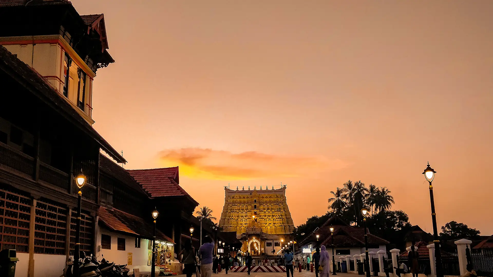

OVERVIEW

Called the ‘Evergreen city of India’, Thiruvananthapuram is the capital of the state of Kerala. The city comprises beautiful beaches, long stretches of palm fringed shorelines, windy backwaters and historical structures. Along with its natural and historical significance, the city is also popular for its ancient temples that are renowned for their architecture making Thiruvananthapuram one of the most visited pilgrim centers of India.
In the late 17th century, the city was the capital of the Travancore kingdom that was ruled by the Varma dynasty. After forming the Travancore kingdom, Maharaja Marthanada Varma dedicated it to Lord Padmanabha, the presiding deity of Shri Padmanabhaswamy temple and named the city ‘Thiruvananthapuram’.
The word ‘Thiruvananthapuram’ is derived from the Malayalam word thiru- anantha-puram, which means ‘City of Lord Ananta’. Ananta is the serpent Shesha on whom Lord Padmanabha (another form of Lord Vishnu) reclines. During the British era, the name of the city was anglicized to Trivandrum and it was the official name of the city, until 1991, when the government renamed the city to Thiruvananthapuram.
The Sri Padmanabhaswamy temple is one of the prominent attractions of the city. Devotees in large numbers visit the temple every year. It’s popular for its architectural splendor and historical and religious significance.
Thiruvananthapuram is also a paradise for beach lovers. Beaches situated outside the city like the Shankhumugham and Kovalam beaches are world famous.
Now the IT hub of Kerala, Thiruvananthapuram is also a major academic hub; it houses several educational and scientific institutions like Vikram Sarabhai Space Centre (VSSC) and the Indian Institute of Space Science and Technology (IIST).
PLACES TO STAY IN THIRUVANANTHAPURAM
There are ample accommodation options Thiruvananthapuram. You can find many budget, mid-range and luxury hotels in the city. The hotels are known for their hospitality and services. Keys Hotel has been liked by visitors and is close to most of the tourist spots in the city. Rooms here costs around Rs 3000 per night. The Capital Trivandrum near Pulimoodu junction is a good mid-range hotel costing around Rs 2500.
BEST PLACES TO EAT IN THIRUVANANTHAPURAM
are several multi-cuisine restaurants that serve local as well as Tamilian, Chinese and North Indian cuisine. You can also find several fast-food restaurants in the city. The local cuisine is unique and characterized by the use of plenty of coconut and spice. Do also try non-veg cuisine like Fish pollichathu (fish served on a banana leaf) and Fish molee (fish in coconut sauce).
BEST TIME TO VISIT THIRUVANANTHAPURAM
average minimum and maximum temperature of Thiruvananthapuram is as given below. The best time to visit Thiruvananthapuram is also specified.